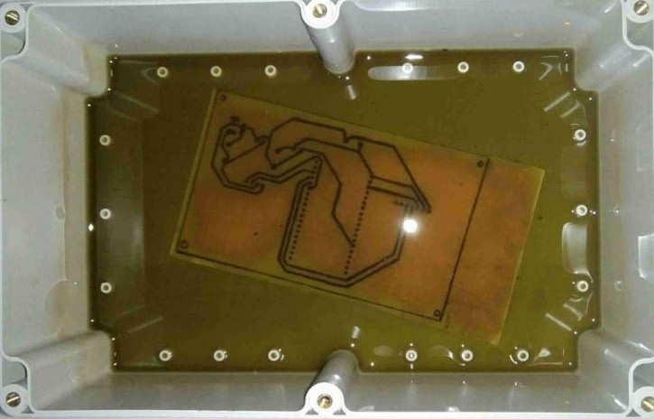

Praxis 2: PCB Etching and Prototype Development Practice
Ferric chloride (FeCl₃) is used as a chemical etchant to remove unwanted copper from the surface of a copper-clad PCB during prototype circuit development. The solution dissolves the exposed copper areas that are not protected by a resist layer, leaving behind the desired circuit pattern. This practice is performed during the early stages of electronic circuit prototyping and testing to help validate circuit functionality before final fabrication.